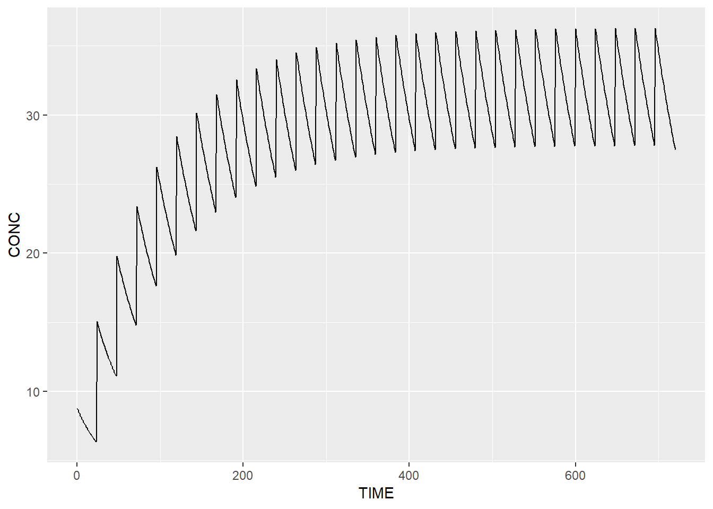

Chapter 7 The model
Model taken from literature: Soulele, K., et al. “Population pharmacokinetics of fluticasone propionate/salmeterol using two different dry powder inhalers.” European Journal of Pharmaceutical Sciences 80 (2015): 33-42.
library(nlmixr)
modelCode <- function(){
ini({
TVKa <- 3.87
TVCL <- 659 #L/h
TVV1 <- 56900 #L
TVV2 <- 5550 #L
TVQ <- 259 #L/h
EKa ~ 0.04507129 #0.2123**2
ECL ~ 0.1535856 #0.3919**2
EV1 ~ 0.09223369 #0.3037**2
EV2 ~ 0.208301 #0.4564**2
EQ ~ 0.1015697# 0.3187**2
EPS_ADD <- 1.91 #
EPS_PROP <- 0.117
})
model({
Ka <- TVKa * exp(EKa)
CL <- TVCL * exp(ECL)
V1 <- TVV1 * exp(EV1)
V2 <- TVV2 * exp(EV2)
Q <- TVQ * exp(EQ)
K12 <- Q/V1
K21 <- Q/V2
d/dt(center) = - CL/V1 * center - K12*center + K21 * periph
d/dt(periph) = K12*center - K21 * periph
CONC = center / V1 * 1000
CONC ~ prop(EPS_PROP) + add(EPS_ADD)
})
}
nlmixrModel <- nlmixrUI(modelCode)
library(tdmore)
m1 <- tdmore(nlmixrModel)We now define the treatment regimen
regimen <- data.frame(
TIME=seq(0, by=24, length.out=30),
AMT=500 # 500ug standard dose
)
adhering <- predict(m1, regimen=regimen, newdata=seq(0, 30*24))
actual <- data.frame(
TIME=seq(0, by=24, length.out=30),
AMT=500*sample(c(0,1), 30, replace=TRUE) # probability of 50% to not take the dose
)
nonAdhering <- predict(m1, regimen=actual, newdata=seq(0, 30*24))
pred <- estimate(m1, regimen=regimen)
ggplot(pred, newdata=seq(0, 30*24)) +
ipred(mapping=aes(x=TIME, y=CONC))
# labs(x="Time (hours)", y="Concentration (mg/L)")